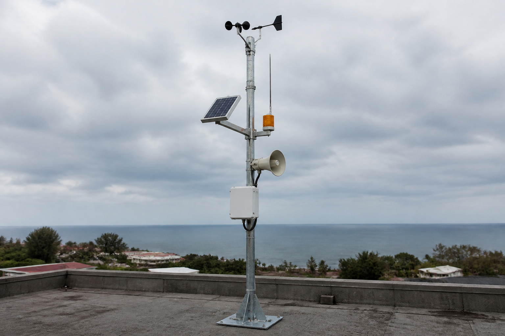

Diagnostiquer, dépanner, refabriquer — la station d'alerte doit resonner avant la prochaine alerte
🖥️ Ordinateur partagé (salle de techno, CDI) : un autre élève qui ouvre cette page sur la même session verra tes réponses.
Quand tu as fini : imprime en PDF si tu veux garder une trace, puis clique sur « 🗑 Effacer ma sauvegarde ».
Pour toi, sans note : coche ce qui est déjà en place. Sous chaque ligne, un lien pour le reprendre si tu n'en es pas sûr·e.
→ pas encore sûr·e ? relis « Proposer un protocole de diagnostic » dans la synthèse 4e_C5.1 à C5.3
→ pas encore sûr·e ? relis « Proposer un protocole de diagnostic » dans la synthèse 4e_C5.1 à C5.3
→ pas encore sûr·e ? relis « Remplacer une pièce sans protocole fourni » dans la synthèse 4e_C5.1 à C5.3
Dans cette séquence : la question n'est pas seulement « où est la panne » mais « faut-il réparer ou remplacer ».
Tu vas mettre en balance le coût, la durée de vie et ce que ça coûte à la planète.
Et assumer une décision qui n'a pas de bonne réponse évidente.
Un mot à garder en tête : un objet en panne n'est pas un objet mort ; il est mort quand on décide qu'il l'est.
| Code | Sous-compétence travaillée | Socle | Activités |
|---|---|---|---|
| 3e_C5.1 | Formuler des hypothèses expliquant le dysfonctionnement d\'un objet technique. | D1.3, D4 | 1, 2, R |
| 3e_C5.2 | Proposer un protocole de dépannage puis de réparation. | D2, D4 | 3, R |
| 3e_C5.3 | Réaliser le dépannage ou la réparation d\'un système défectueux. | D2, D4, D5 | 4, R |
| 3e_C5.4 | Réaliser une pièce sur mesure pour réparer un objet technique. | D2, D3, D4 | 5 |
Compétence parente C5 : identifier un dysfonctionnement d\'un objet technique et y remédier — BO n°9 du 29/02/2024.
Suite directe des séquences « Station d\'alerte » (C4.3→C4.6) et « Internet jusqu\'à Sainte-Luce » (C4.7-C4.8).
Référence normative : programme de technologie du cycle 4, BO n°9 du 29 février 2024.
Codification opérationnelle : les codes 3e_C5.1 · 3e_C5.2 · 3e_C5.3 · 3e_C5.4 servent à ranger les séquences ; ils ne viennent pas du programme officiel.
Les formulations ci-dessus sont celles du référentiel.
Le mode essentiel masque les corrections et les compléments : il ne reste que les consignes et les exercices. À activer si la page te paraît trop chargée.
Lundi matin, après le passage du cyclone.
Le quartier a tenu bon, la station aussi… presque.
Au test
hebdomadaire de la sirène : silence total.
Pourtant l'application reçoit toujours les mesures de vent et de
pluie, et la LED du boîtier est allumée.
Autre dégât visible : la girouette (elle indique d'où vient le vent) pend lamentablement, son support en
plastique a cassé net.
Le technicien de la mairie propose de « tout changer » : une station neuve coûte 1 800 €.
Le club techno du
collège refuse : « On diagnostique, on répare, on refabrique ce qui manque. »
La prochaine saison cyclonique
n'attendra pas.
Et jeter un système qui fonctionne à 90 % serait un gâchis absurde.

Comment localiser précisément l'origine d'une panne, remettre le système en état
et refabriquer une pièce cassée — plutôt que tout jeter ?
Réponds avec tes idées actuelles — tu y reviendras à la fin.
Le niveau attendu est exactement le même qu'avec la consigne libre : ces débuts de phrases retirent l'obstacle de la rédaction, pas l'exigence scientifique.
Recopie-les et complète chaque « ____ ».
Le niveau attendu est exactement le même qu'avec la consigne libre : ces débuts de phrases retirent l'obstacle de la rédaction, pas l'exigence scientifique.
Recopie-les et complète chaque « ____ ».
| Outil retenu | Pourquoi | Alternative |
|---|---|---|
| Simulateur de dépannage intégré (cette page) | Chaque élève mesure, localise et répare virtuellement — sans risque et sans matériel. | — |
| Objets réels à diagnostiquer + multimètres | Le geste réel du dépanneur. | ⚠ multimètres : MATÉRIEL À CONFIRMER — prévoir l\'alternative simulation |
| FreeCAD (pièce sur mesure) | Gratuit, installe partout, suffisant pour modéliser le support. | SolidWorks (licence à vérifier) ; gabarit papier imprimable (aucun poste) |
| Impression 3D de la pièce | Procédé adapté à la pièce unique. | FlashForge Adventurer 5M Pro, en salle — volume 220 × 220 × 220 mm, buse 0,4 mm. Repli assumé : découpe/assemblage de plaques |
Atelier « clinique des objets » : objets en panne apportés (lampe LED, ventilateur, jouet), diagnostic au multimètre (MATÉRIEL À CONFIRMER), réparation encadrée.
Sécurité : très basse tension uniquement, jamais d\'objet branché au secteur.
FreeCAD : modéliser le support de girouette à partir du plan coté (activité 5), exporter en STL pour une impression future.
Tout est dans cette page : simulateur de dépannage (activité 4), plan coté à lire (activité 5) et gabarit papier de la pièce à tracer en vraie grandeur.
Personne n\'est pénalisé.
Une question par ligne du bloc « Avant de commencer ».
Elles ne sont pas notées et ne comptent pas dans ta progression : elles te disent quoi relire avant de te lancer.
« Je ne sais pas encore » est une réponse utile.
Question directrice : que nous apprennent les constats AVANT même d'ouvrir le boîtier ?
Règle du dépanneur : tester d'abord ce qui est simple, rapide et probable.
Un symptôme s'OBSERVE (on peut le montrer du doigt) ; une hypothèse s'IMAGINE (elle commence souvent par « peut-être que… »). Pour le classement : regarde les durées indiquées !
Le câble se vérifie d'un coup d'œil (n°1) ;
le fusible demande d'ouvrir le boîtier (n°2) ;
tester la sirène en la remplaçant est le plus long (n°3). Les constats 2 et 3 innocentent déjà la batterie ET le microcontrôleur : inutile de les suspecter en premier.
a) peu probable (boîtier alimenté) · probablement en état (les mesures partent encore) · symptôme · hypothèse.
b) câble = 1 · fusible = 2 · sirène = 3.
Raisonnement : avant d'ouvrir quoi que ce soit, les constats éliminent des suspects — c'est le propre d'un bon diagnostic. Puis on classe les hypothèses restantes par simplicité et probabilité (après un cyclone, un câble arraché est TRÈS probable).
Exemple transférable : ton téléphone ne charge plus → tu testes d'abord un autre câble (30 s) avant d'accuser la batterie (réparation coûteuse).
Limite : « peu probable » n'est pas « impossible » — si les 3 hypothèses échouent, on reviendra sur les suspects innocentés.
Le niveau attendu est exactement le même qu'avec la consigne libre : ces débuts de phrases retirent l'obstacle de la rédaction, pas l'exigence scientifique.
Recopie-les et complète chaque « ____ ».
Suis les flèches avec le doigt : à chaque losange, prends la branche OUI ou NON selon la situation décrite.
A : premier losange → NON → branche de gauche.
B : OUI, OUI, NON → action câble.
C : OUI, OUI, OUI → dernier rectangle.
Pour la justification : la LED est le test le plus rapide (1 seconde, sans outil).
Et si on change deux choses et que ça remarche, impossible de savoir laquelle était la panne.
A → contrôler batterie et panneau solaire · B → rebrancher/remplacer le câble · C → remplacer la sirène.
Justification : l'arbre trie les tests du plus simple au plus coûteux : la LED se lit en 1 seconde sans démonter.
Et on ne modifie qu'UNE chose à la fois : sinon, même si la panne disparaît, on ignore laquelle des modifications l'a corrigée — le diagnostic n'apprend rien, et on a peut-être remplacé un élément sain.
Lien avec la programmation : cet arbre est un algorigramme (comme en 3e_C6.2) : losange = test, rectangle = action. Diagnostiquer, c'est exécuter un algorithme !
Question directrice : comment transformer des hypothèses en une suite de tests ordonnée, sûre et convaincante ?
Complète la règle : « La panne se situe entre le dernier point de test … et le premier point … ».
Un exemple :
T1 = 12 V (volts) ✔
T2 = 12 V ✔
T3 = signal ✔
T4 = 0 V ✘
Le niveau attendu est exactement le même qu'avec la consigne libre : ces débuts de phrases retirent l'obstacle de la rédaction, pas l'exigence scientifique.
Recopie-les et complète chaque « ____ ».
Un protocole commence toujours par ce qui ne demande AUCUN outil (regarder, rassembler les indices) et finit toujours par une vérification.
Ordre logique : constats (1) → inspection visuelle (2) → mesures ordonnées (3) → réparation ciblée (4) → retest complet (5).
Pour l'exemple : tout est correct jusqu'à T3, anormal à T4 → l'élément situé ENTRE T3 et T4 est le câble.
a) L'ordre du protocole :
1. rassembler les constats et relire l'arbre de diagnostic ;
2. inspecter visuellement ;
3. mesurer aux points T1 à T4, une mesure à la fois ;
4. remplacer ou réparer uniquement l'élément localisé ;
5. retester la sirène complètement.
b) entre le dernier point correct et le premier point anormal ; exemple → le câble (entre T3 et T4).
c) Vrai : la règle absolue du collège est « très basse tension uniquement » — le secteur 230 V peut tuer, son dépannage est réservé aux professionnels habilités.
d) Protocole attendu (exemple) :
1. constater (la pompe ne tourne pas, le programme d'arrosage s'exécute-t-il ?) ;
2. inspecter (tuyau pincé ? connecteur débranché ?) ;
3. mesurer la tension à l'entrée de la pompe au moment de la commande ;
4. remplacer l'élément localisé puis relancer un cycle complet d'arrosage.
Pourquoi un protocole ÉCRIT : il rend le dépannage reproductible (un autre élève peut le suivre), il évite d'oublier une étape, et il prouve la démarche — comme un protocole d'expérience en sciences.
Question directrice : sauras-tu localiser la panne en un minimum de mesures, puis remettre la sirène en service ?
🏠 Peut se faire à la maison (sans matériel, sur téléphone)
Applique la règle de la séance 2 : mesure T1, puis T2, puis T3, puis T4 — et arrête-toi dès la première valeur anormale : la panne est juste avant.
Panne n°1 : T1, T2, T3 corrects puis T4 = 0 V → l'élément entre T3 et T4 est le câble.
Panne n°2 : T1 = 12 V mais T2 = 0 V → l'élément entre T1 et T2 est le fusible.
Dans les deux cas, 2 à 4 mesures suffisent.
Panne n°1 : relevés T1 12 V · T2 12 V · T3 signal OK · T4 0 V → panne entre T3 et T4 = câble (arraché par le cyclone, cohérent avec l'inspection). 4 mesures nécessaires (on doit aller jusqu'à T4 pour voir l'anomalie).
Panne n°2 : T1 12 V · T2 0 V → panne entre T1 et T2 = fusible (2 mesures suffisent !). Un fusible grillé après un cyclone signale souvent une surtension : le noter dans le rapport.
Question 2 : le retest complet vérifie que le symptôme initial a disparu ET qu'aucun nouveau problème n'est apparu (un remplacement peut déranger un connecteur voisin). C'est la signature d'une réparation professionnelle.
Transfert version 🅰 : au labo, ces mesures se font au multimètre (MATÉRIEL À CONFIRMER) sur des maquettes très basse tension, sous contrôle du professeur.
Question directrice : comment refabriquer le support de girouette pour qu'il s'adapte EXACTEMENT — et avec quel procédé ?
💡 Sans l'entraxe exact, les vis ne tomberont jamais en face des trous du mât : c'est LA cote critique d'une pièce « sur mesure ».
Les cotes sont écrites en jaune sur le plan : cherche « 60 », « 40 (entraxe) », « Ø5 », « Ø6 ».
Pour les procédés, relis les ✔ et ✘ du comparatif.
Pièce unique + forme avec cylindre → impression 3D. Provisoire rapide → découpe.
Grande série → moulage (c'est d'ailleurs le procédé d'origine). Matériau : dehors en Martinique = UV violents + sel → il faut un plastique prévu pour l'extérieur.
a) longueur 60 mm · entraxe 40 mm · trous Ø5 mm · alésage Ø6 mm.
b) Notre pièce : impression 3D — unique, de forme complexe.
L'imprimante de la salle, une FlashForge Adventurer 5M Pro, la produit : 60 mm de long tiennent largement dans ses 220 × 220 × 220 mm.
La pièce provisoire : découpe + assemblage.
La grande série : moulage.
c) plastique résistant aux UV (ASA, ou ABS traité anti-UV) : l'acier nu rouille avec les embruns, le carton ne survivrait pas à la première pluie, le PLA standard ramollit au soleil tropical (60 °C au soleil direct sur un toit !).
Version 🅱 : dans FreeCAD, la pièce se modélise en 3 opérations : esquisse du rectangle 60×40 extrudée sur 8 mm, cylindre Ø12 h35, perçages Ø5 et alésage Ø6. Export STL → impression.
Version 🅲 : imprime le plan à l'échelle 1:1 et découpe le gabarit papier : pose-le sur le mât pour vérifier que l'entraxe tombe juste — c'est exactement le rôle d'un prototype.
🏠 Peut se faire à la maison (sans matériel, sur téléphone)
Le niveau attendu est exactement le même qu'avec la consigne libre : ces débuts de phrases retirent l'obstacle de la rédaction, pas l'exigence scientifique.
Recopie-les et complète chaque « ____ ».
Reprends la démarche : constats → hypothèses innocentées → hypothèse la plus probable → protocole qui commence sans outil.
Voyant allumé = le bloc fournit (probablement) → suspect n°1 éliminé.
Bourdonnement = le courant arrive au moteur qui n'arrive pas à démarrer → composant moteur.
La règle TBT : on travaille après le bloc (12 V), jamais dedans (230 V à l'intérieur !).
Réponses :
1. « Le voyant du bloc est allumé » est un symptôme, un constat.
2. Il rend peu probable l'hypothèse « le bloc ne fournit plus rien ».
3. Le bourdonnement et les pales libres orientent vers un composant du moteur défaillant.
4. Première étape du protocole : rassembler les constats et inspecter.
5. « On mesure côté 12 V, mais on ne démonte JAMAIS le bloc secteur » : vrai.
Décision attendue : réparer.
12 € contre 45 €, un déchet électronique évité, une compétence acquise.
Le temps passé est un apprentissage, pas une perte.
(Une réponse argumentée « jeter » peut être recevable si elle pèse honnêtement les critères : c'est l'argumentation qui est évaluée.)
Ouverture : c'est exactement l'esprit de l'indice de réparabilité affiché sur les appareils neufs en France : plus il est haut, plus les pièces et les plans sont disponibles — un critère de choix citoyen (lien 3e_C3.3, Thème 1).
Toutes ces notions ont été construites dans les activités 1 à 5 — rien de nouveau ici.
Symptôme = constat observable · hypothèse = explication supposée.
Les constats (même positifs) innocentent des éléments.
On classe les hypothèses simple → rapide → probable et on les teste via un arbre de diagnostic, en ne modifiant qu'une chose à la fois.
Constats → inspection visuelle → mesures ordonnées de proche en proche (T1→T4) → réparation du seul élément localisé → retest complet.
La panne est entre le dernier point correct et le premier point anormal.
Un protocole écrit est reproductible et prouve la démarche.
Le dépannage réel applique le protocole avec méthode : peu de mesures bien choisies valent mieux que beaucoup au hasard.
Sécurité absolue : très basse tension uniquement, jamais le secteur 230 V (volts).
Le plan coté transmet toutes les dimensions (dont l'entraxe, cote critique).
Le procédé (impression 3D / découpe / moulage) se choisit selon forme, quantité, délai, coût, moyens ; le matériau selon l'environnement (UV, sel…).
Réparer plutôt que jeter : un geste technique, économique et écologique — cf. l'indice de réparabilité.
panne = failure/breakdowndépannage = troubleshootingfusible = fusepièce détachée = spare partplan coté = dimensioned drawingentraxe = hole spacingréparer = to repair/fix
♻ Défi citoyen : relève l'indice de réparabilité de 3 appareils chez toi ou en magasin ; lequel choisirais-tu à qualité égale, et pourquoi ?
🖥 Défi FreeCAD : modélise le support de girouette d'après le plan coté et exporte le STL — le fichier pourra être imprimé dès que l'imprimante du collège sera confirmée.
🔧 Défi repair café : renseigne-toi : existe-t-il un « repair café » en Martinique ? Quels objets y répare-t-on le plus ?
Le niveau attendu est exactement le même qu'avec la consigne libre : ces débuts de phrases retirent l'obstacle de la rédaction, pas l'exigence scientifique.
Recopie-les et complète chaque « ____ ».
Le niveau attendu est exactement le même qu'avec la consigne libre : ces débuts de phrases retirent l'obstacle de la rédaction, pas l'exigence scientifique.
Recopie-les et complète chaque « ____ ».
Le niveau attendu est exactement le même qu'avec la consigne libre : ces débuts de phrases retirent l'obstacle de la rédaction, pas l'exigence scientifique.
Recopie-les et complète chaque « ____ ».
32 questions — dont 8 avec schémas à lire — pour vérifier toute la démarche du dépanneur.
🚀 Ouvrir le QCM d'entraînement